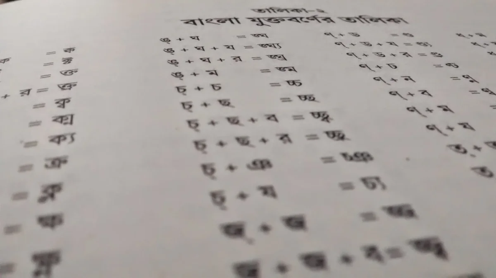
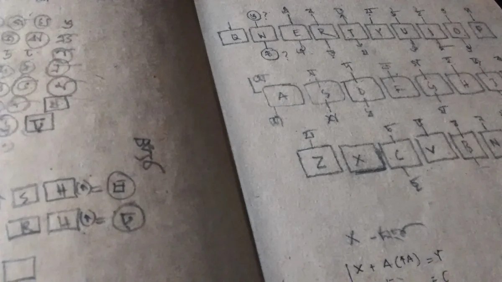
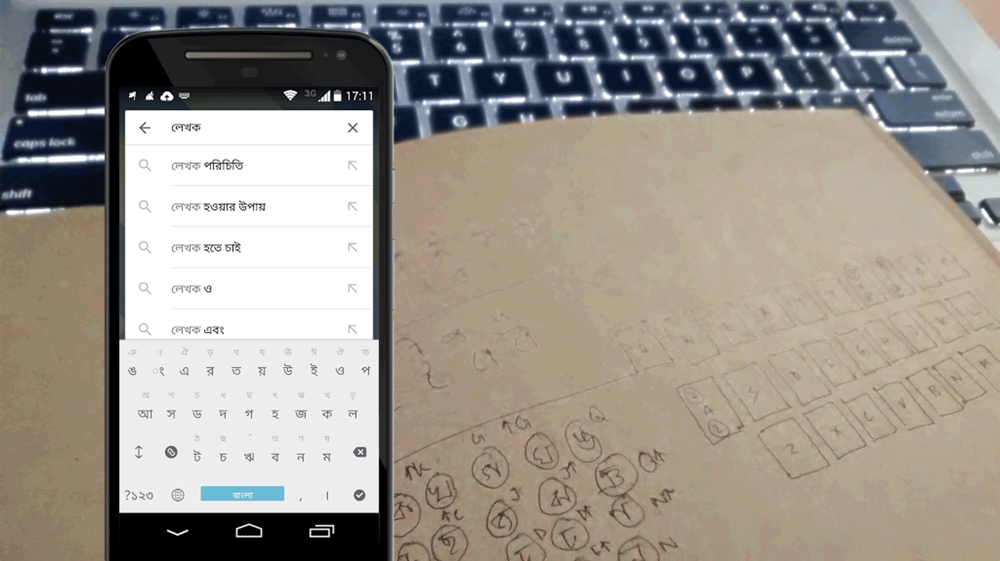

Why This One Is Different
It came out of frustration, love, and a stubborn refusal to accept something that had quietly become normal: writing Bangla using English letters and sounds, because that was simply what phonetic keyboards made easiest.
I'm not a linguist. I'm not a scholar of Bangla literature. I've said as much publicly before. But I grew up caring about this script the way some people care about family, and somewhere along the way I decided that caring wasn't enough. I wanted to build something.
Where It Started: A Font, Not a Keyboard
This story actually begins years earlier, in 2009, when I got the chance to design a custom Bangla font for Robi as part of their rebrand. That project is where I first understood, really understood, how much complexity lives inside our alphabet. Bangla has 11 vowels and 39 consonants, but that's only the beginning. There are roughly 90 commonly used conjunct characters, and more than 120 additional three-part conjuncts formed through various consonant-conjunct marks (ন-ফলা, ম-ফলা, য-ফলা, র-ফলা, ল-ফলা, and ব-ফলা). Designing type for this script means holding all of that in your head at once.
In 2013, that early experience led to something bigger. I was part of a font design initiative called Amar Bornomala, developed in collaboration with Bangla Academy and the Graphic Design department at Dhaka University. The font was unveiled on the eve of International Mother Language Day.

Bangla's long list of complex conjunct characters makes the language genuinely hard to learn, even for native speakers.
The Idea Behind Lekhok
Somewhere in that process, a different question started forming: what if the problem wasn't just fonts, but how we type Bangla in the first place?
Phonetic keyboards helped Bangla spread across the early internet, and I'm genuinely grateful to the people and tools that made that possible. But they also meant an entire generation was learning to write Bangla by thinking in English first. That never sat right with me.
When I actually sat down to design a new keyboard, the scale of the problem looked impossible at first. Then I noticed something simple: Bangla has only 50 base characters, vowels and consonants combined. English fits 52 characters onto 26 keys using shift. If Bangla could do something similar, the base layout would only need 25 keys, with one additional key acting as a kind of wildcard, handling conjuncts, vowel marks, and reph. That single realization became the entire foundation of Lekhok's keyboard layout.
"I wanted to write Bangla the way I write English."

Like most design work, it started on paper, sketching out combinations for the conjunct characters.
Launch, and What Came After
I'm not a technical person by training. I was lucky to have two friends who believed in this enough to help me actually build it.
The typing screen puts that 25-key layout into practice, with the wildcard key handling conjuncts, vowel marks, and reph as you write.

The keyboard in action, typing a conjunct in real time.
Lekhok launched on Android two days before International Mother Language Day, on 19 February 2015. There was no press wave, no viral moment, nothing dramatic. It just quietly existed. Over time, usage grew, a few thousand people at first, eventually reaching around 100,000 downloads. Some users found it hard to switch from what they already knew. I understood that, and never tried to convince anyone they were wrong for preferring phonetic typing. I only wanted to build something for the people who felt the same pull I did, toward the complexity of the script rather than away from it.
One thing I chose deliberately: I never pursued copyright protection for the keyboard layout or design. I wanted it open. If someone wanted to build a physical keyboard using this layout and sell it, I welcomed that, and offered to help however I could. This project was never about ownership. It was about the language surviving in its own form.
Reflection
Lekhok never became a business. It has bugs I never got around to fixing, and features like word suggestion and auto-correct that stayed on my someday list. By most conventional measures, it's an unfinished project.
But I don't measure it that way. This is one of the few things I've built where the outcome was never really the point. I put my heart into this, more than almost anything else I've made, and I still think of it less as a product and more as a small, sincere attempt to keep something I love from quietly disappearing.